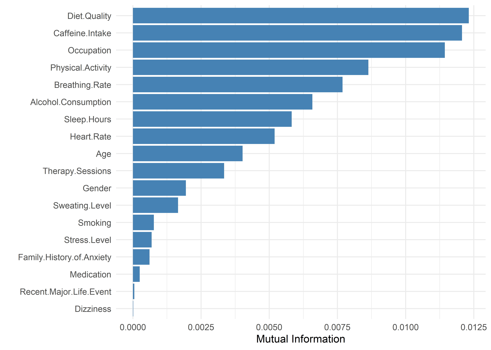
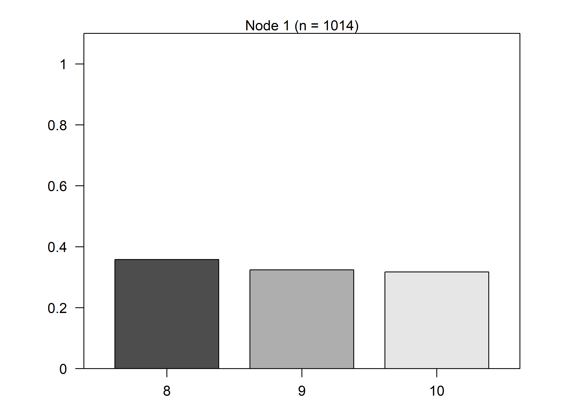

Failing to Predict across High Anxiety Levels
Exploratory analysis revealed little evidence of a relationship between high anxiety levels (8–10) and the available predictors, raising concerns about whether these classes contain enough signal to support meaningful modeling.
Mutual Information for Anxiety Level (8-10)
To evaluate this more formally, we computed the mutual information between Anxiety Level and each predictor—a measure of how much information a feature provides about the target. All values were approximately 0.01 or lower, indicating minimal predictive power.
Permutation tests confirmed these results. Only one predictor—Diet Quality—yielded a statistically significant mutual information score (MI ≈ 0.01, p < 0.01), suggesting a weak but detectable association. However, the effect is negligible in practical terms. All other predictors had MI < 0.01 and p-values > 0.10, reinforcing the conclusion that high anxiety levels cannot be reliably predicted from the available features.
Trying to Overfit a Model
As a diagnostic exercise, we intentionally overfit a decision tree model to probe for residual signal, using highly permissive parameters (mincriterion = 0.5, minsplit = 5). The outcome (Anxiety Level 8–10) was treated as categorical to increase sensitivity to subtle distinctions.
Even with relaxed constraints, the tree produced no splits—implying that no features provided even marginal discriminatory value. The confusion matrix confirms this: the model defaulted to predicting the majority class (8) for all observations, relying entirely on class frequency rather than learned structure.

Confusion Matrix and Statistics
Reference
Prediction 8 9 10
8 363 329 322
9 0 0 0
10 0 0 0
Overall Statistics
Accuracy : 0.358
95% CI : (0.3284, 0.3884)
No Information Rate : 0.358
P-Value [Acc > NIR] : 0.5118
Kappa : 0
Mcnemar's Test P-Value : NA
Statistics by Class:
Class: 8 Class: 9 Class: 10
Sensitivity 1.000 0.0000 0.0000
Specificity 0.000 1.0000 1.0000
Pos Pred Value 0.358 NaN NaN
Neg Pred Value NaN 0.6755 0.6824
Prevalence 0.358 0.3245 0.3176
Detection Rate 0.358 0.0000 0.0000
Detection Prevalence 1.000 0.0000 0.0000
Balanced Accuracy 0.500 0.5000 0.5000Conclusion
The consistent failure of both information-theoretic and model-based methods confirms that anxiety levels 8–10 cannot be reliably distinguished from one another based on the available predictors. These observations form an indistinct cluster with no usable internal structure. Accordingly, we model them as a single high-anxiety class using binary logistic regression. For all remaining levels, we apply a separate linear regression to capture finer-grained variation. This stacked modeling approach respects the limits of the data while maximizing interpretability where possible.